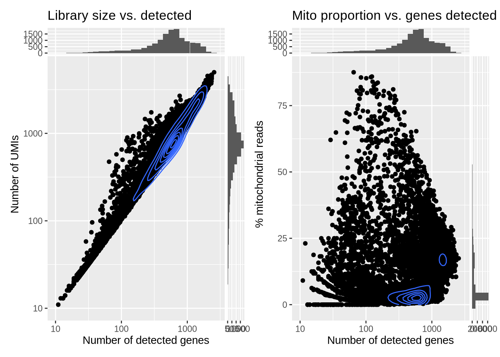
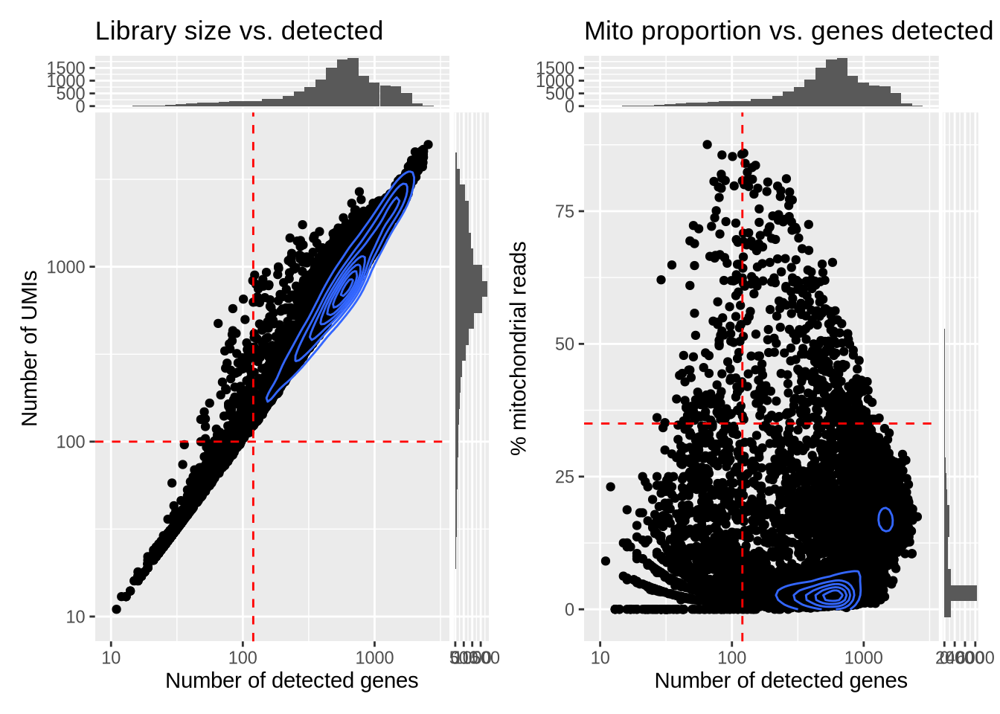
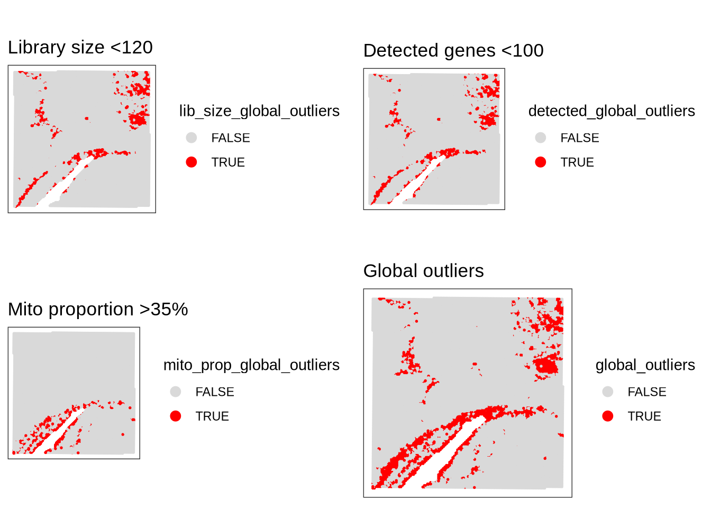
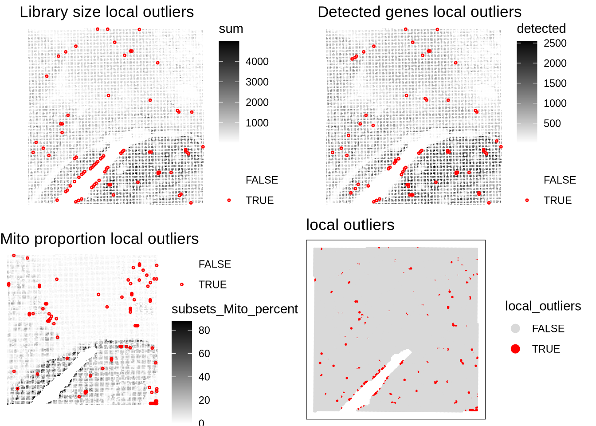
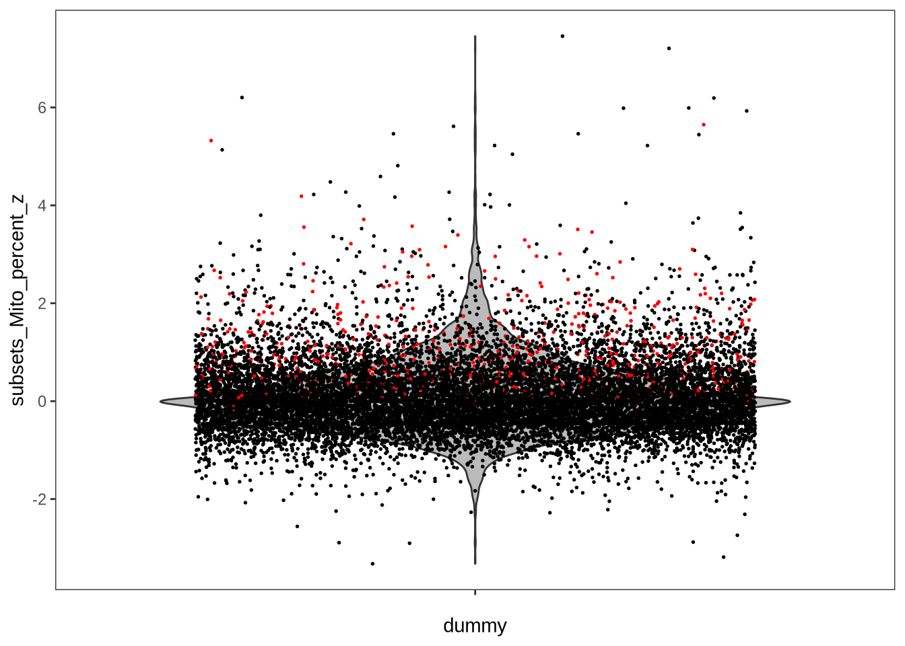
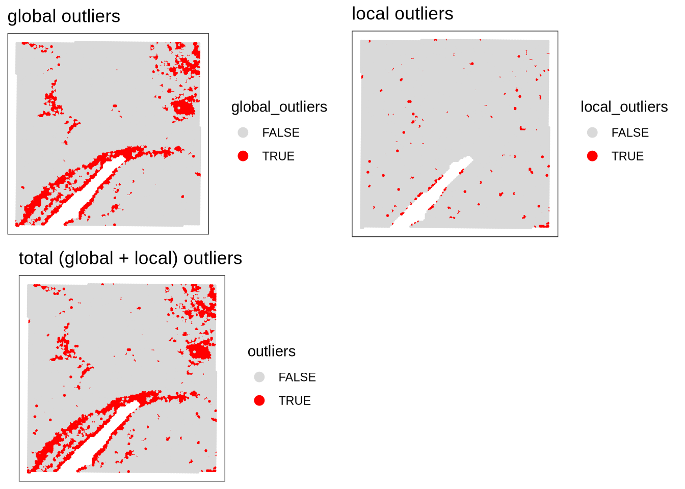
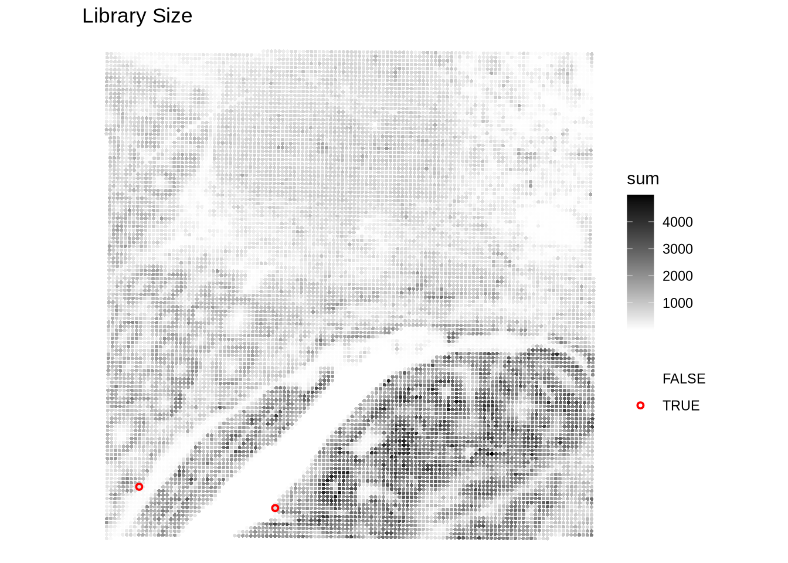
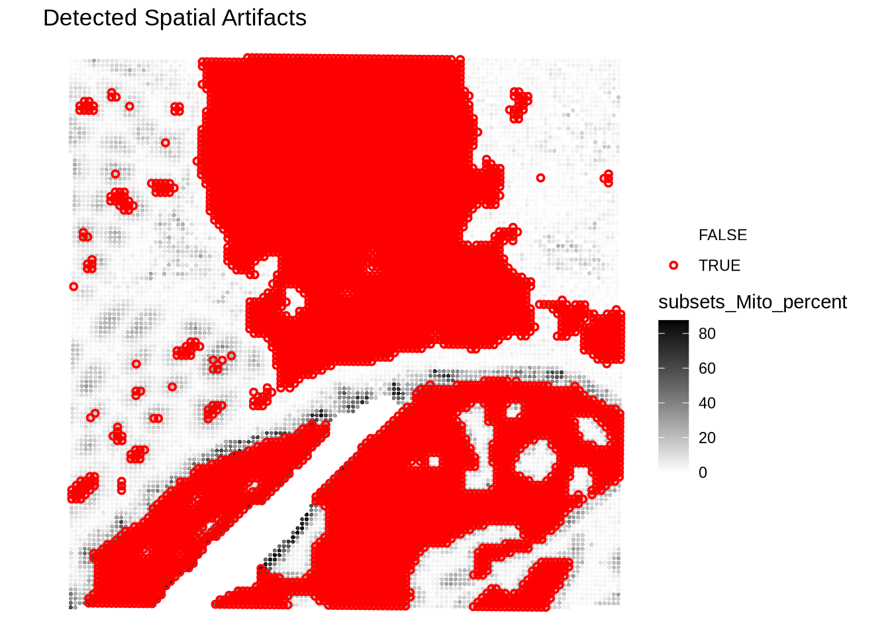
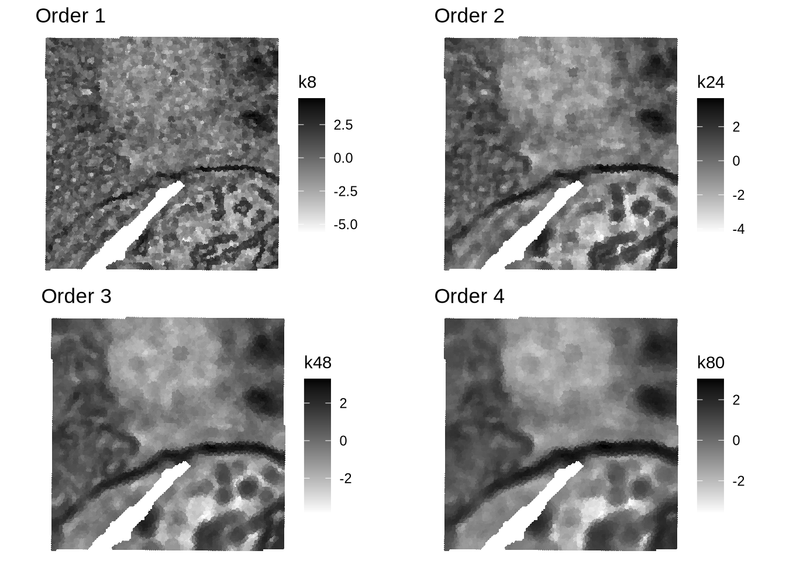

![]()
library(SpatialExperiment)
library(SpotSweeper)
library(scuttle)
library(scater)
library(ggside)
library(ggplot2)
library(escheR)
library(HDF5Array)
library(ggspavis)
library(patchwork)2. Quality Control (QC)
Load packages
Load Data
visium_data_path <- file.path(data_path, "raw_colon_cancer")
hdf_data_path <- file.path(data_path, "hdf5_colon_cancer")spe <- loadHDF5SummarizedExperiment(
dir = hdf_data_path,
prefix = "01_subsetted_"
)Calculate QC metrics
First, we calculate the QC metrics for each spot using scuttle::addPerCellQCMetrics(). On top of the basic QC metrics (library size, number of detected genes), we will also compute the mitochondrial proportion using subsets argument. Mitochondrial genes are typically prefixed with “MT-”.
# grep returns the index number that matches the regex
# grepl returns a logical vector where TRUE indicates a match.
is.mito <- rownames(spe)[grepl("^MT-", rownames(spe))]
print(c("Column names before adding QC metrics:", colnames(colData(spe))))[1] "Column names before adding QC metrics:"
[2] "barcode"
[3] "in_tissue"
[4] "array_row"
[5] "array_col"
[6] "bin_size"
[7] "sample_id" spe <- addPerCellQCMetrics(spe, subsets = list(Mito = is.mito))
print(c("Column names after adding QC metrics:", colnames(colData(spe)))) [1] "Column names after adding QC metrics:"
[2] "barcode"
[3] "in_tissue"
[4] "array_row"
[5] "array_col"
[6] "bin_size"
[7] "sample_id"
[8] "sum"
[9] "detected"
[10] "subsets_Mito_sum"
[11] "subsets_Mito_detected"
[12] "subsets_Mito_percent"
[13] "total" We can see that six new columns have been added. - sum: Total UMI counts (library size) for each spot - detected: Number of detected genes for each spot - subsets_Mito_sum: Total UMI counts from mitochondrial genes for each spot - subsets_Mito_detected: Number of detected mitochondrial genes for each spot - subsets_Mito_percent: Percentage of mitochondrial gene expression for each spot - total: Total UMI counts from all genes for each spot (same as sum)
Outlier detection
Global outlier detection using fixed thresholds
One way to detect low-quality spots is to use fixed thresholds for QC metrics. We can set the thresholds based on the global distrubution of the QC metrics across all spots.
# Plot library size vs. detected genes
p1 <- ggcells(spe, aes(x = detected, y = sum)) +
geom_point() +
geom_density_2d() +
scale_x_log10() +
scale_y_log10() +
geom_xsidehistogram() +
geom_ysidehistogram() +
labs(y = "Number of UMIs", x = "Number of detected genes") +
ggtitle("Library size vs. detected")
# Plot mito proportion vs. detected genes
p2 <- ggcells(spe, aes(x = detected, y = subsets_Mito_percent)) +
geom_point() +
geom_density_2d() +
scale_x_log10() +
geom_xsidehistogram() +
geom_ysidehistogram() +
labs(y = "% mitochondrial reads", x = "Number of detected genes") +
ggtitle("Mito proportion vs. genes detected")
p1 + p2
Based on the distribution, we can set thresholds for filtering low-quality spots. Here, we will use fixed thresholds for minimum library size (120), minimum number of detected genes (100), and maximum mitochondrial proportion (35%).
We can visualize these thresholds on the plots.
lib_size_min_cutoff <- 120
detected_genes_min_cutoff <- 100
mito_prop_max_cutoff <- 35
# Plot library size vs. detected genes
p1 <- ggcells(spe, aes(x = detected, y = sum)) +
geom_point() +
geom_density_2d() +
scale_x_log10() +
scale_y_log10() +
geom_xsidehistogram() +
geom_ysidehistogram() +
geom_vline(xintercept = lib_size_min_cutoff, col = "red", lty = 2) +
geom_hline(yintercept = detected_genes_min_cutoff, col = "red", lty = 2) +
labs(y = "Number of UMIs", x = "Number of detected genes") +
ggtitle("Library size vs. detected")
# Plot mito proportion vs. detected genes
p2 <- ggcells(spe, aes(x = detected, y = subsets_Mito_percent)) +
geom_point() +
geom_density_2d() +
scale_x_log10() +
geom_xsidehistogram() +
geom_ysidehistogram() +
geom_vline(xintercept = lib_size_min_cutoff, col = "red", lty = 2) +
geom_hline(yintercept = mito_prop_max_cutoff, col = "red", lty = 2) +
labs(y = "% mitochondrial reads", x = "Number of detected genes") +
ggtitle("Mito proportion vs. genes detected")
p1 + p2
We apply the filter and mark spots that are considered global outliers based on the set thresholds.
spe$lib_size_global_outliers <- spe$sum < lib_size_min_cutoff
spe$detected_global_outliers <- spe$detected < detected_genes_min_cutoff
spe$mito_prop_global_outliers <- spe$subsets_Mito_percent > mito_prop_max_cutoff
spe$global_outliers <-
spe$lib_size_global_outliers |
spe$detected_global_outliers |
spe$mito_prop_global_outliers
qc <- grep("global_outliers$", names(colData(spe)))
sapply(colData(spe)[qc], table) lib_size_global_outliers detected_global_outliers
FALSE 13252 13207
TRUE 955 1000
mito_prop_global_outliers global_outliers
FALSE 13617 12693
TRUE 590 1514Out of 14,207 spots, 1,514 (around 10%) are considered global outliers based on the fixed thresholds.
We can visualize these spots.
p1 <- plotObsQC(
spe,
plot_type = "spot",
annotate = "lib_size_global_outliers",
) +
ggtitle(paste0("Library size <", lib_size_min_cutoff))
p2 <- plotObsQC(
spe,
plot_type = "spot",
annotate = "detected_global_outliers",
) +
ggtitle(paste0("Detected genes <", detected_genes_min_cutoff))
p3 <- plotObsQC(
spe,
plot_type = "spot",
annotate = "mito_prop_global_outliers",
) +
ggtitle(paste0("Mito proportion >", mito_prop_max_cutoff, "%"))
p4 <- plotObsQC(
spe,
plot_type = "spot",
annotate = "global_outliers",
) +
ggtitle("Global outliers")
gridExtra::grid.arrange(p1, p2, p3, p4, ncol = 2)
Local outlier detection using SpotSweeper
In spatial transcriptomics, low-quality spots are often spatially clustered. SpotSweeper leverages local neighborhoods to correct for spatial confounding to identify local outliers and regional artifacts.
We are going to use SpotSweeper::localOutliers() to identify local outliers for library size, number of detected genes, and mitochondrial proportion. direction argument specifies whether we are looking for lower or higher outliers. For library size and number of detected genes, we are interested in lower outliers, while for mitochondrial proportion, we are interested in higher outliers. The log argument specifies whether to log-transform the metric before calculating outliers.
Local outlier detection works as follows:
Identify \(k\)-nearest neighbors for each spot \(i\) based on the spatial coordinates.
Calculate \(Z\)-score for each spot \(i\) with reference to its \(k\) neighbors. \[ z_i = \frac{0.6745 \times (x_i - m_i)}{\text{MAD}_i} \]
, where \(x_i\) is the QC metrics of interest, \(m_i\) is the median of the QC metrics in the neighborhood, and \(\text{MAD}_i\) denotes the median absolute deviation of the metrics in the neighborhood. \(0.6745\) is a constant to make the MAD comparable to standard deviation under normality assumption (mathematically, $ = 0.6745 $ for normal distribution).
Identify outliers based on the \(Z\)-scores using a threshold (default: \(|z| > 3\)).
spe <- localOutliers(
spe,
metric = "sum",
direction = "lower",
log = TRUE,
)
spe <- localOutliers(
spe,
metric = "detected",
direction = "lower",
log = TRUE,
)
spe <- localOutliers(
spe,
metric = "subsets_Mito_percent",
direction = "higher",
log = FALSE,
)
spe$local_outliers <-
as.logical(spe$sum_outliers) |
as.logical(spe$detected_outliers) |
as.logical(spe$subsets_Mito_percent_outliers)
qc <- grep(
"(?<!global)_outliers$",
names(colData(spe)),
perl = TRUE
)
sapply(colData(spe)[, qc], table) sum_outliers detected_outliers subsets_Mito_percent_outliers
FALSE 14130 14139 14127
TRUE 77 68 80
local_outliers
FALSE 14036
TRUE 171There are 171 local outliers detected based on the three QC metrics. We can plot these outliers.
p1 <- plotQCmetrics(
spe,
metric = "sum",
outliers = "sum_outliers",
point_size = 0.4,
stroke = 0.75
) +
ggtitle("Library size local outliers")
p2 <- plotQCmetrics(
spe,
metric = "detected",
outliers = "detected_outliers",
point_size = 0.4,
stroke = 0.75
) +
ggtitle("Detected genes local outliers")
p3 <- plotQCmetrics(
spe,
metric = "subsets_Mito_percent",
outliers = "subsets_Mito_percent_outliers",
point_size = 0.4,
stroke = 0.75
) +
ggtitle("Mito proportion local outliers")
p4 <- plotObsQC(
spe,
plot_type = "spot",
annotate = "local_outliers",
) +
ggtitle("local outliers")
gridExtra::grid.arrange(p1, p2, p3, p4, ncol = 2)
Are all local outliers also detected as global outliers?
plotObsQC(
spe,
plot_type = "violin",
x_metric = "subsets_Mito_percent_z",
annotate = "mito_prop_global_outliers"
)
In this plot, the y-axis shows the Z-scores calculated from SpotSweeper for mitochondrial proportion, so the spots lying above Z-score of 3 are considered local outliers. The red spots are global outliers based on the fixed threshold (35%). We can appreciate many local outliers were not detected as global outliers, indicating the advantage of using local neighborhoods to identify low-quality spots that may be missed by global thresholding.
Combine global and local outlier results
spe$outliers <- spe$global_outliers | spe$local_outliers
sapply(
colData(spe)[, c("global_outliers", "local_outliers", "outliers")],
table
) global_outliers local_outliers outliers
FALSE 12693 14036 12615
TRUE 1514 171 1592p1 <- plotObsQC(
spe,
plot_type = "spot",
annotate = "global_outliers",
) +
ggtitle("global outliers")
p2 <- plotObsQC(
spe,
plot_type = "spot",
annotate = "local_outliers",
) +
ggtitle("local outliers")
p3 <- plotObsQC(
spe,
plot_type = "spot",
annotate = "outliers",
) +
ggtitle("total (global + local) outliers")
gridExtra::grid.arrange(p1, p2, p3, ncol = 2)
Technical artifact detection using SpotSweeper
Spatial transcriptomics data may contain regional techinal artifacts. SpotSweeper provides methods to identify two distinct types of such artifacts: dryspot artifacts and hangnail artifacts.
Dryspot artifact detection
Dryspot artifacts are caused by incomplete coverage of permeabilization agents, leading to regions with abnormally low RNA capture.
The authors detect dryspot artifacts by applying DBSCAN to the log-transformed library size and log-transformed number of detected genes.
Since the SpotSweeper Bioconductor package currently does not implement dryspot artifact detection, we implement a custom function to detect dryspot artifacts. In the paper, the radius of the epsilon neighbor is set to 0.5, and the minimum number points to 20, so we use these parameters as default values.
Dryspot artifact detection function
findDrySpotArtifacts <- function(
spe,
library_size = "sum",
num_detected_genes = "detected",
samples = "sample_id",
eps = 0.5,
minPts = 20,
name = "dryspot_artifacts"
) {
# ===== Validity checks =====
## Check if 'spe' is (or inherits from) SpatialExperiment
if (!inherits(spe, "SpatialExperiment")) {
stop(
"Input data must be a SpatialExperiment or inherit from SpatialExperiment."
)
}
## Check if library_size is in colData
if (!all(library_size %in% colnames(colData(spe)))) {
stop("library_size must be present in colData.")
}
## Check if num_detected_genes is in colData
if (!num_detected_genes %in% colnames(colData(spe))) {
stop("num_detected_genes must be present in colData.")
}
## Check if samples is in colData
if (!samples %in% colnames(colData(spe))) {
stop("Samples column must be present in colData.")
}
## Check if spe contains more than one sample_id
unique_sample_ids <- unique(colData(spe)[[samples]])
if (length(unique_sample_ids) > 1) {
stop(
"The input SPE must contain only one sample. Please ensure only samples containing artifacts are passed."
)
}
# ===== Main Function =====
# Initialize a list to store spe for each sample
columnData_list <- sapply(unique_sample_ids, FUN = function(x) NULL)
for (sample in unique_sample_ids) {
# subset by sample
spe.temp <- spe[, colData(spe)[[samples]] == sample]
# Calculate log2( library size + 1 ) and log2( detected genes + 1 )
spe.temp$sum_log2_1p <- log2(spe.temp$sum + 1)
spe.temp$detected_log2_1p <- log2(spe.temp$detected + 1)
# Apply DBSCAN clustering
dryspot.artifacts <- dbscan::dbscan(
colData(spe.temp)[, c("sum_log2_1p", "detected_log2_1p")],
eps = eps,
minPts = minPts
)
spe.temp$dryspot_artifacts <- dryspot.artifacts$cluster
# Artifact annotation based on mean library size and mean detected genes
# Normal cluster should have the highest mean library size and mean detected genes
cd <- colData(spe.temp)
means <- aggregate(
cd[, c(library_size, num_detected_genes)],
by = list(cluster = cd$dryspot_artifacts),
FUN = mean,
na.rm = TRUE
)
normal_cluster <- with(
means,
cluster[order(-means[[library_size]], -means[[num_detected_genes]])[1]]
)
spe.temp$dryspot_artifacts <- spe.temp$dryspot_artifacts != normal_cluster
# add to sample list
columnData_list[[sample]] <- colData(spe.temp)
}
# rbind the list of dataframes
columnData_aggregated <- do.call(rbind, columnData_list)
# replace SPE column data with aggregated data
colData(spe) <- columnData_aggregated
# return spe
return(spe)
}spe <- findDrySpotArtifacts(
spe,
library_size = "sum",
num_detected_genes = "detected",
eps = 0.5,
minPts = 20,
)
table(spe$dryspot_artifacts)
FALSE TRUE
14205 2 There are only two spots marked as dryspot artifacts. We can visualize them.
plotQCmetrics(
spe,
metric = "sum",
outliers = "dryspot_artifacts",
point_size = 1.1
) +
ggtitle("Library Size")
Apparently, there are no obvious dryspot artifacts in this dataset.
Hangnail artifact detection
Hangnail artifacts are caused by tissue damage during tissue dissection. They are often visually apparent in histological images, but do not show substantial differences in the library size, number of genes detected, or mitochondrial proportion.
However, the authors claim that hangnails display visibly lower variance in mitochondrial ratio across spots than in non-artifact domains.
The hangnail artifact detection algorithm works as follows:
- Calculate the local variance of the mitochondiral ratio for each spot at multiple orders of neighborhood. (Five orders by default)
- Each order of neighborhood is defined as concentric squares (for Visium HD) around each spot. For example, order 1 includes the immediate neighboring spots, order 2 includes the next layer of neighboring spots, and so on. Therefore, for \(i\)-th order, neighborhoods are composed of \((2i + 1)^2 - 1 = 4i(i+1)\) spots.
- The multiscale local variance matrix is subjected to PCA
- \(K\)-means clustering (\(K=2\)) is performed on the first two PCs to distinguish hangnail artifacts from normal regions.
# find artifacts using SpotSweeper
spe <- findArtifacts(
spe,
mito_percent = "subsets_Mito_percent",
mito_sum = "subsets_Mito_sum",
n_order = 5,
shape = "square"
)
table(spe$artifact)
FALSE TRUE
7111 7096 Almost half of the spots are marked as hangnail artifacts. We can visualize them.
# Plot the spatial distribution of the detected artifacts.
plotQCmetrics(
spe,
metric = "subsets_Mito_percent", # You can choose any relevant metric to display
outliers = "artifact",
point_size = 1.1
) +
ggtitle("Detected Spatial Artifacts")
Again, many spots are marked as hangnail artifacts.
To assess the validity of the detected hangnail artifacts, we can visualize the distribution of mitochondrial proportion local variance.
# Plot the spatial distribution of the detected artifacts.
p1 <- plotQCmetrics(
spe,
metric = "k8",
outliers = NULL,
point_size = 1.1
) +
ggtitle("Order 1")
p2 <- plotQCmetrics(
spe,
metric = "k24",
outliers = NULL,
point_size = 1.1
) +
ggtitle("Order 2")
p3 <- plotQCmetrics(
spe,
metric = "k48",
outliers = NULL,
point_size = 1.1
) +
ggtitle("Order 3")
p4 <- plotQCmetrics(
spe,
metric = "k80",
outliers = NULL,
point_size = 1.1
) +
ggtitle("Order 4")
gridExtra::grid.arrange(p1, p2, p3, p4, ncol = 2)
Upon visual inspection, there are no obvious regions with visibly lower variance in mitochondrial proportion. Therefore, we will not filter out hangnail artifacts in the downstream analysis.
Filtering
# remove the spots considered of low quality based on both global and local metrics
spe <- spe[, !spe$outliers]
# remove features with all 0 counts
spe <- spe[rowSums(counts(spe)) > 0, ]Save the filtered data
saveHDF5SummarizedExperiment(
spe,
dir = hdf_data_path,
prefix = "02_qc_",
replace = TRUE,
chunkdim = NULL,
level = NULL,
as.sparse = NA,
verbose = NA
)
Expand for Session Info
sessionInfo()R version 4.5.2 (2025-10-31)
Platform: x86_64-conda-linux-gnu
Running under: Ubuntu 22.04.4 LTS
Matrix products: default
BLAS/LAPACK: /home/kim/workspace/spatial_transcriptomics/.pixi/envs/default/lib/libopenblasp-r0.3.30.so; LAPACK version 3.12.0
locale:
[1] LC_CTYPE=en_US.UTF-8 LC_NUMERIC=C
[3] LC_TIME=de_CH.UTF-8 LC_COLLATE=en_US.UTF-8
[5] LC_MONETARY=de_CH.UTF-8 LC_MESSAGES=en_US.UTF-8
[7] LC_PAPER=de_CH.UTF-8 LC_NAME=C
[9] LC_ADDRESS=C LC_TELEPHONE=C
[11] LC_MEASUREMENT=de_CH.UTF-8 LC_IDENTIFICATION=C
time zone: Europe/Zurich
tzcode source: system (glibc)
attached base packages:
[1] stats4 stats graphics grDevices utils datasets methods
[8] base
other attached packages:
[1] patchwork_1.3.2 ggspavis_1.16.0
[3] HDF5Array_1.38.0 h5mread_1.2.0
[5] rhdf5_2.54.0 DelayedArray_0.36.0
[7] SparseArray_1.10.0 S4Arrays_1.10.0
[9] abind_1.4-8 Matrix_1.7-3
[11] escheR_1.10.0 ggside_0.4.0
[13] scater_1.38.0 ggplot2_4.0.0
[15] scuttle_1.20.0 SpotSweeper_1.6.0
[17] SpatialExperiment_1.20.0 SingleCellExperiment_1.32.0
[19] SummarizedExperiment_1.40.0 Biobase_2.70.0
[21] GenomicRanges_1.62.0 Seqinfo_1.0.0
[23] IRanges_2.44.0 S4Vectors_0.48.0
[25] BiocGenerics_0.56.0 generics_0.1.4
[27] MatrixGenerics_1.22.0 matrixStats_1.5.0
loaded via a namespace (and not attached):
[1] tidyselect_1.2.1 viridisLite_0.4.2 dplyr_1.1.4
[4] vipor_0.4.7 farver_2.1.2 viridis_0.6.5
[7] S7_0.2.0 fastmap_1.2.0 digest_0.6.37
[10] rsvd_1.0.5 lifecycle_1.0.4 terra_1.8-70
[13] dbscan_1.2.3 magrittr_2.0.4 compiler_4.5.2
[16] rlang_1.1.6 tools_4.5.2 yaml_2.3.10
[19] knitr_1.50 labeling_0.4.3 htmlwidgets_1.6.4
[22] RColorBrewer_1.1-3 BiocParallel_1.44.0 withr_3.0.2
[25] grid_4.5.2 beachmat_2.26.0 Rhdf5lib_1.32.0
[28] scales_1.4.0 MASS_7.3-65 isoband_0.2.7
[31] dichromat_2.0-0.1 cli_3.6.5 rmarkdown_2.30
[34] rjson_0.2.23 ggbeeswarm_0.7.2 parallel_4.5.2
[37] XVector_0.50.0 vctrs_0.6.5 jsonlite_2.0.0
[40] BiocSingular_1.26.0 BiocNeighbors_2.4.0 ggrepel_0.9.6
[43] irlba_2.3.5.1 beeswarm_0.4.0 magick_2.9.0
[46] glue_1.8.0 codetools_0.2-20 gtable_0.3.6
[49] ScaledMatrix_1.18.0 tibble_3.3.0 pillar_1.11.1
[52] htmltools_0.5.8.1 rhdf5filters_1.22.0 R6_2.6.1
[55] evaluate_1.0.5 lattice_0.22-7 Rcpp_1.1.0
[58] gridExtra_2.3 xfun_0.53 spatialEco_2.0-3
[61] pkgconfig_2.0.3 Citation
BibTeX citation:
@online{kim2025,
author = {Kim, Youngjun},
title = {Spatial {Transcriptomics} {Data} {Analysis} {Tutorial} 02:
{Quality} {Control}},
date = {2025-12-19},
url = {https://yjkim93.github.io/posts/2025-12-19-spatial-transcriptomics-02-qc/},
langid = {en}
}
For attribution, please cite this work as:
Kim, Youngjun. 2025. “Spatial Transcriptomics Data Analysis
Tutorial 02: Quality Control.” December 19, 2025. https://yjkim93.github.io/posts/2025-12-19-spatial-transcriptomics-02-qc/.